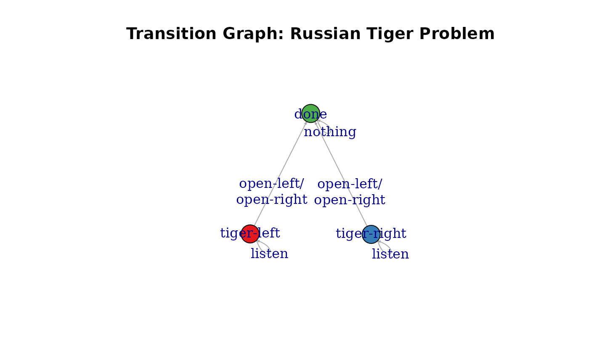
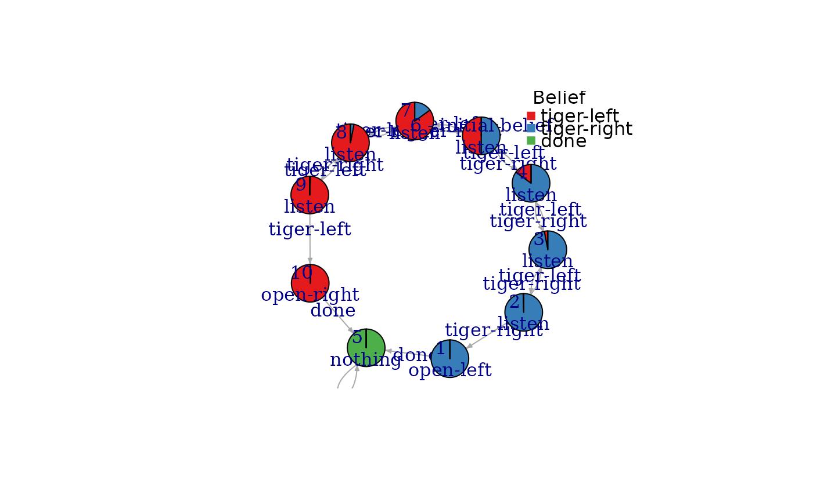

This is a variation of the Tiger Problem introduced in Cassandra et al (1994) with an absorbing state after a door is opened.
Format
An object of class POMDP.
Details
The original Tiger problem is available as Tiger. The original problem is an infinite-horizon problem, where when the agent opens a door then the problem starts over. The infinite-horizon problem can be solved if a discount factor \(\gamma < 1\) is used.
The Russian Tiger problem uses no discounting, but instead
adds an absorbing state done which is reached
after the agent opens a door. It adds the action nothing to indicate
that the agent does nothing. The nothing action is only available in the
state done indicated by a reward of -Inf from all after states. A new
observation done is only emitted by the state done. Also, the Russian
tiger inflicts more pain with a negative reward of -1000.
See also
Other POMDP_examples:
POMDP(),
POMDP_example_files,
Tiger
Examples
data("RussianTiger")
RussianTiger
#> POMDP, list - Russian Tiger Problem
#> Discount factor: 1
#> Horizon: Inf epochs
#> Size: 3 states / 4 actions / 3 obs.
#> Start: 0.5, 0.5, 0
#> Solved: FALSE
#>
#> List components: ‘name’, ‘discount’, ‘horizon’, ‘states’, ‘actions’,
#> ‘observations’, ‘transition_prob’, ‘observation_prob’, ‘reward’,
#> ‘start’, ‘terminal_values’, ‘info’
# states, actions, and observations
RussianTiger$states
#> [1] "tiger-left" "tiger-right" "done"
RussianTiger$actions
#> [1] "listen" "open-left" "open-right" "nothing"
RussianTiger$observations
#> [1] "tiger-left" "tiger-right" "done"
# reward (-Inf indicates unavailable actions)
RussianTiger$reward
#> action start.state end.state observation value
#> 1 listen <NA> <NA> <NA> -1
#> 2 nothing <NA> <NA> <NA> -Inf
#> 3 <NA> done <NA> <NA> -Inf
#> 4 nothing done <NA> <NA> 0
#> 5 open-left tiger-left <NA> <NA> -1000
#> 6 open-right tiger-right <NA> <NA> -1000
#> 7 open-left tiger-right <NA> <NA> 10
#> 8 open-right tiger-left <NA> <NA> 10
sapply(RussianTiger$states, FUN = function(s) actions(RussianTiger, s))
#> $`tiger-left`
#> [1] "listen" "open-left" "open-right"
#>
#> $`tiger-right`
#> [1] "listen" "open-left" "open-right"
#>
#> $done
#> [1] "nothing"
#>
plot_transition_graph(RussianTiger, vertex.size = 30, edge.arrow.size = .3, margin = .5)

# absorbing states
absorbing_states(RussianTiger)
#> tiger-left tiger-right done
#> FALSE FALSE TRUE
# solve the problem.
sol <- solve_POMDP(RussianTiger)
policy(sol)
#> tiger-left tiger-right done action
#> 1 -1000.000000 10.000000 -2000.00 open-left
#> 2 -176.217714 8.567046 -15695.15 listen
#> 3 -29.667899 7.113638 -25560.42 listen
#> 4 -2.629696 5.544325 -31493.06 listen
#> 5 0.000000 0.000000 0.00 nothing
#> 6 3.318222 3.318222 -33493.06 listen
#> 7 5.544325 -2.629696 -31493.06 listen
#> 8 7.113638 -29.667899 -25560.42 listen
#> 9 8.567046 -176.217714 -15695.15 listen
#> 10 10.000000 -1000.000000 -2000.00 open-right
plot_policy_graph(sol)
